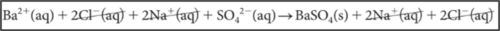
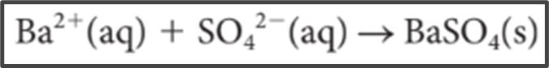

|
Did you notice that the sodium and chloride ions in the total ionic equation appear on both sides of the equation as ions. This means that they remain unchanged. Ions that do not participate in the reaction are called spectator ions. These ions can be omitted from the total ionic equation to give a simpler equation called a net ionic equation. |
Callout
Total ionic equation:


Callout
Writing Total Ionic Equations and Net Ionic Equations
Useful tips for writing total ionic equations and net ionic equations.
Show More
1. Write the balanced chemical equation for the reaction.
2. Use the solubility table (Table 1) to determine whether a compound precipitates.
3. Write the total ionic equation by showing all of the soluble compounds as ions.
4. Cancel spectator ions.
5. Write the net ionic equation.